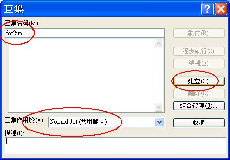
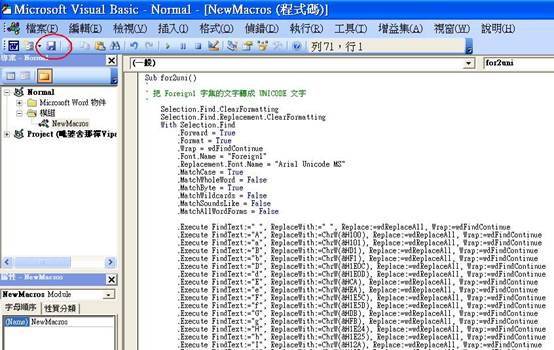
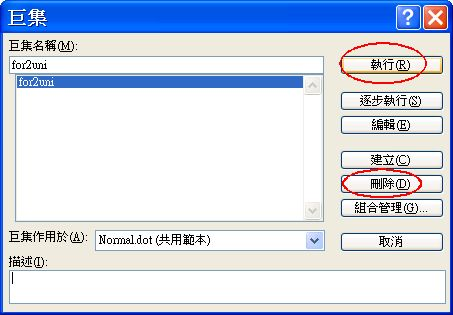
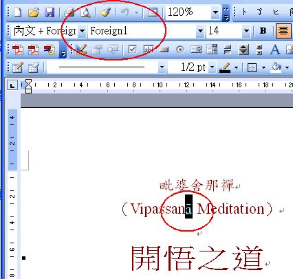
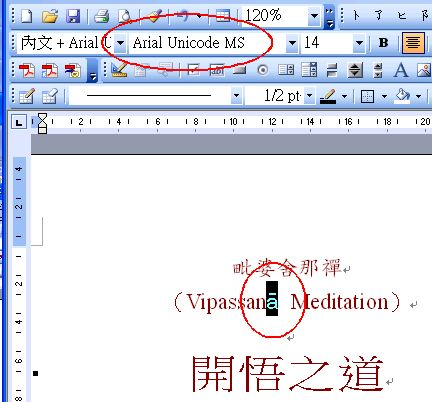

然後在上方巨集名稱輸入 〝for2uni〞 , 這是取 foreign1 to unicode 的意思.
然後按下右方的 〝建立〞 .

請將這些文字全部刪除.

(或將滑鼠點上面〝for2uni-macro.txt〞這個鏈結 → 按右鍵 → 〝另存新檔〞或〝另存連結為〞→〝存檔〞→ 再以〝記事簿〞將其開啟 → 全選 → 複製) 並貼入視窗中, 如下圖所示.
完成後可以選左上方的儲存, 並關閉此視窗, 就會回到 word 視窗.


選擇 for2uni 後, 再按下執行, 就會把整篇 word 中的 foreign1 字型全部換成 unicode 字型.
完成後, 若不想保留此巨集, 只要按下 〝刪除〞 即可.



把 Foreign1 字型的 a , 全部換成 Arial Unicode MS 字型的 ā
而字型的選擇方法, 就是先把游標分別放在 a 及 ā 的輸入欄位中, 並按下最底下的〝格式〞 → 〝字型〞 就可以選擇要取代的字型了. 若沒有選擇字型, 則是不論什麼字型都要取代, 那就不是我們所要的了.
程式就是把大小寫由 a 到 z 全部取代一次。(沒有 c, x, z )